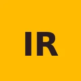
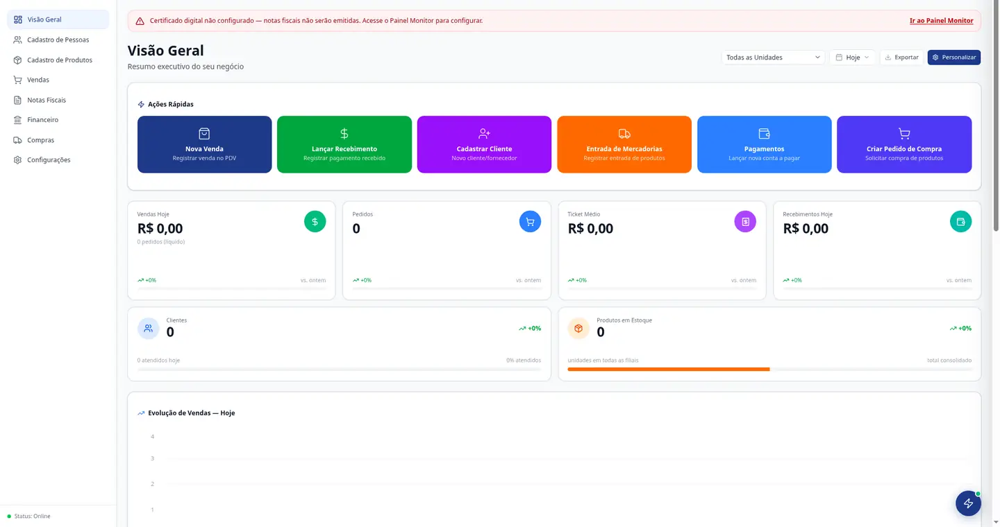
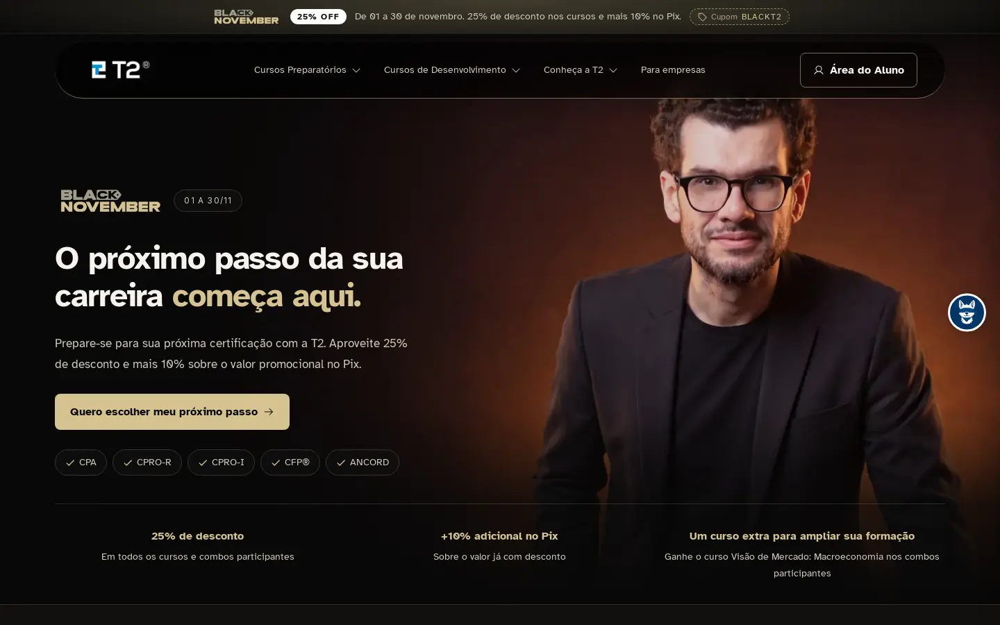
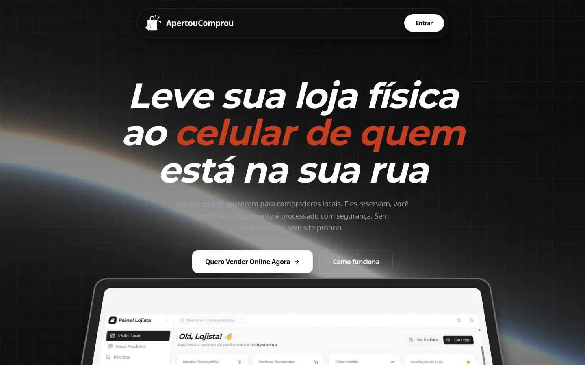
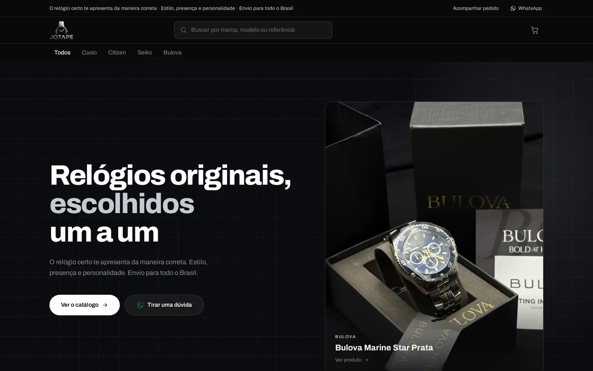
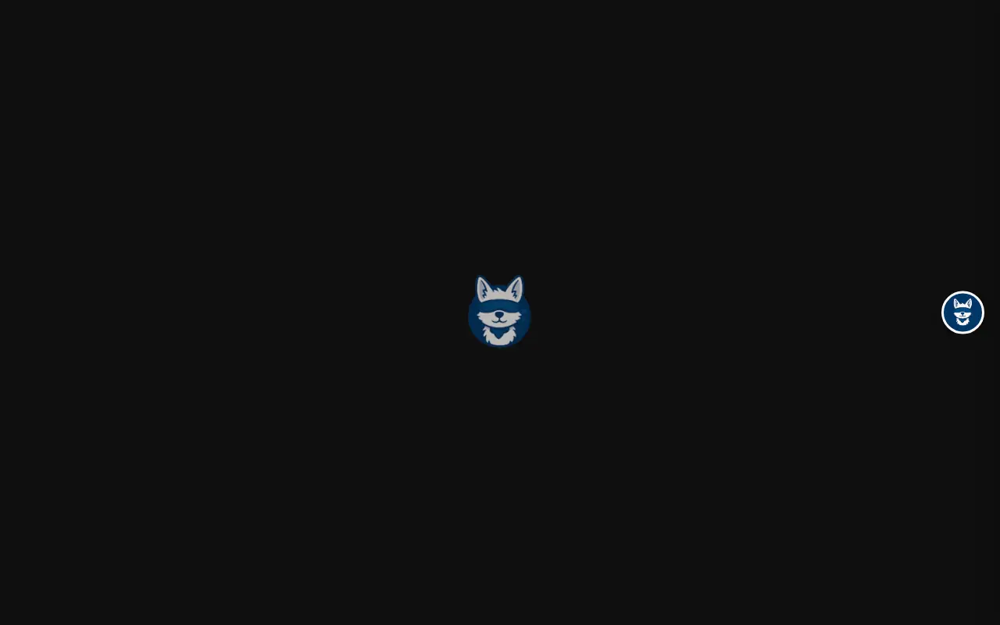
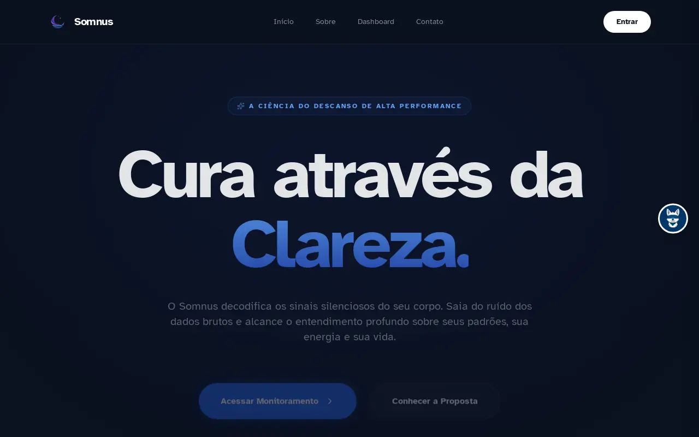

Engenharia de Software
Gran Faculdade · junho de 2026 a junho de 2030
Bacharelado, cursando
Desenvolvedor Full Stack
19 anos, São Paulo. Construo produtos web, SaaS e mobile, do requisito à publicação. Acessibilidade e performance entram desde o começo.
Ver projetosTive a oportunidade de trabalhar com o Rafael Henrique Blanco na ByStartup e posso dizer que ele foi um dos profissionais mais sólidos e confiáveis com quem já colaborei.
Uma das suas maiores forças é a capacidade de conduzir projetos de alta complexidade com velocidade e qualidade, sem perder o controle nem a calma. Ele entrega com consistência, organiza bem o trabalho e transforma desafios técnicos difíceis em soluções claras e bem executadas.
Além do excelente conhecimento técnico e da experiência em desenvolvimento de software, o Rafael é extremamente profissional, responsável e organizado. Tem postura madura sob pressão, comunica com objetividade e eleva o nível do time ao seu redor.
Recomendo o Rafael sem dúvidas. Tenho certeza de que será um grande diferencial para qualquer equipe que busque alguém experiente, confiável e capaz de entregar projetos complexos com excelência.

Desenvolvedor Full Stack, mesma equipe na ByStartup (agosto de 2026)
Meu nome é Rafael Henrique Blanco. Tenho 19 anos, moro em São Paulo e trabalho como desenvolvedor full stack.
Hoje cuido da tecnologia da T2 Educação: o sistema interno, as integrações entre plataformas, a automação de processos, o banco de dados, a infraestrutura e o deploy. Também construo produtos para empresas e startups, do levantamento de requisitos até a publicação e a evolução em produção.
Acessibilidade e performance entram no início do projeto. Uso IA e automação para ganhar velocidade, e sigo responsável pela revisão e pela qualidade do que vai para produção.
Sou formado em Informática para Internet pela ETEC Parque Belém. Curso Engenharia de Software na Gran Faculdade e Inteligência Artificial e Automação Digital na UniFECAF, com a Faculdade de Tecnologia Rocketseat.
No dia a dia: TypeScript, React, Next.js, Node.js, NestJS, React Native, PostgreSQL, Supabase, Prisma, Drizzle, Docker, Coolify, CI/CD, Cloudflare e Vercel.
Curso de inglês iniciado em 2026.
Formação com HTML, CSS, JavaScript, React, Tailwind e Bootstrap.
Curso de design com foco em Photoshop.
Curso de metodologias ágeis.
Introdução à linguagem Go.
Edição NLW Agents da Rocketseat.
Formação concluída em 2026.
Intensivo de JavaScript da Hashtag Treinamentos.
Semana de carreira em tecnologia da Alura.
Bootcamp de front-end da DIO.
50 projetos em HTML, CSS e JavaScript.
Curso de introdução à programação.
Estudo em andamento. A certificação ainda não foi concluída.

ERP desenvolvido na ByStartup para a operação da empresa. A página pública descreve vendas, estoque, financeiro, notas fiscais, multiempresa, NF-e e NFS-e com a SEFAZ, e dashboards. No painel de demonstração aparecem PDV, pedidos de compra e o módulo financeiro.

Site institucional da T2 Educação, preparatório para certificações do mercado financeiro, e o blog em blog.t2.com.br. Na empresa, cuido da presença digital e também do sistema interno, das integrações e da infraestrutura.

SaaS próprio, em pré-lançamento. Caderno digital para oficinas de costura: registrar o corte, comprovar a entrega com o cliente e organizar a cobrança pelo celular, inclusive sem sinal.

Plataforma para micro e pequenos negócios organizarem estoque, vendas, tarefas e equipe. Atuei na reestruturação do SaaS e na troca da infraestrutura.

Desenvolvimento de um marketplace para a loja física vender pelo celular. Quem está por perto reserva, a loja confirma o estoque e o pagamento segue no aplicativo. Há app na App Store e na Play Store.

Aplicativo de classificados e serviços, com anúncios, lojas e mapa. A versão web publicada em bicus.com.br é feita em Expo e React Native.

Loja de relógios originais, projeto freelance. Catálogo por marca, busca, acompanhamento de pedido e atendimento pelo WhatsApp.

Sistema para gráfica no lugar do vale-caixa de papel. O funcionário registra cópias, impressões e encadernações. O estoque baixa a cada operação e há relatórios com exportação em PDF. O SeeB entra na interface.

Extensão para Chromium, Manifest V3, e widget de uma linha. Foi o TCC na ETEC Parque Belém. Dá para ajustar fonte e contraste, usar filtros de daltonismo, guia de leitura e cursor ampliado, e pausar animações. O widget não coleta dados.

Aplicação web para registrar o sono e ver padrões, com gráficos e conta por usuário. O SeeB faz parte da interface.
Quer falar sobre um projeto ou uma vaga? Envie uma mensagem por aqui. Se preferir, me chame no LinkedIn.